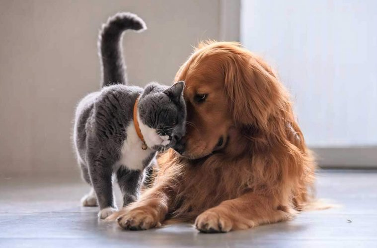

Кішка та собака: як подружити їх в одному домі
- Прості та складні випадки
- Чому кішки ворогують з собаками
- Перша зустріч і період адаптації
- Як уникнути конкуренції
- Взаємини вихованців залежать від господаря
Кішка та собака – найпопулярніші домашні вихованці. Але прийнято вважати, що господарям, які люблять і кішок, і собак, неминуче доведеться робити вибір на користь когось одного, разом вихованці не уживуться. Недарма про людей, які не ладнають, часто сваряться, кажуть, що вони живуть як кішка з собакою. У чому причини одвічної ворожнечі кішок і собак? Чи можна її подолати?
Прості та складні випадки
Нерідко ситуація, коли кішці з собакою доводиться ділити територію, складається спонтанно. Але якщо ви свідомо плануєте завести кішку та собаку, краще підібрати представників порід, у яких шанси ужитися вище, та врахувати можливі ризики.
Не всі кішки – асоціальні тварини, є чимало порід, представники яких доброзичливі, відкриті до спілкування. Це, зокрема, абіссінські, сіамські, норвезькі лісові, бенгальські, бірманські, мейн-куни. Серед собак краще уживаються з кішками представники декоративних порід, з мисливців – спанієлі, біглі, бассети, той-фокстер'єри. Таксу тримати в одній квартирі з кішкою ризиковано. Також небажано, щоб дорослий собака сильно перевершував кішку розмірами. Великий собака, навіть добродушний і доброзичливий (боксер, ньюфаундленд), може випадково травмувати кішку. Мопси, японські хіни, пекінеси доброзичливі з кішками, але їх опуклі очі вразливі, можуть постраждати від котячих кігтів в процесі гри.
Якщо кішка звикла вважати квартиру своєю територією, появу дорослого собаки вона зустріне в багнети, примирити її з конкурентом буде вкрай складно. Підселяти до дорослої собаці кошеня можна, але потрібні додаткові запобіжні заходи. Якщо у вас вже є собака, а ви плануєте завести кішку, на прогулянках заохочуйте доброзичливе ставлення вихованця до будь-яких кішок і припиняйте спроби облаювати та ганяти їх.
- кішка товариська, у собаки відсутні яскраво виражені мисливські інстинкти, агресія;
- кішка та собака приблизно в одній «ваговій категорії»;
- кошеня та щеня ростуть разом;
- до дорослої кішці підселяють цуценя;
- до дорослої собаки підселяють дорослу кішку.
Якщо дві дорослих тварини з'являються в квартирі одночасно, ситуація досить складна. Якщо не припуститися помилок в період знайомства й адаптації, відразу розмежувати зони впливу й уникнути конкуренції, шанси подружити їх непогані. Але чимале значення має досвід спілкування з представниками іншого виду, набутий кожним до зустрічі з новим сусідом.
Чому кішки ворогують з собаками
Люди вважають кішок і собак тваринами-антагоністами, які вороже налаштовані одна до одної. Але правильніше говорити про поведінкові, психологічні відмінності, які перешкоджають їх взаєморозумінню. «Образ ворога» не прописаний у свідомості кішок і собак на генетичному рівні, він формується після спроб спілкування. Основних причин 2, решта – наслідок.
- Історично собаки-стайні тварини, кішки – одинаки.
- У кішок і собак різна система невербальних сигналів (мова тіла).
Те, що прийнято вважати страхом кішок перед собаками або агресією на їх адресу, насправді є відсутністю інтересу та небажанням контакту з представником іншого виду. Собаки за природою більш товариські, кішки – незалежні, схильні до усамітнення. Для собаки, який вперше в житті зустрічається з кішкою, природно проявити до неї інтерес, постаратися встановити контакт. Кішка в спілкуванні не зацікавлена. Обнюхування, поштовхи вона сприймає як вторгнення в особистий простір. Ситуація ускладнюється тим, що при першій зустрічі кішка з собакою неправильно інтерпретують наміри та реакції один одного:
- собаки виляють хвостом від радості, у кішки хвіст посмикується, якщо вона роздратована, сердита, а різкі рухи хвоста з великою амплітудою – знак агресії;
- опущена голова з притиснутими вухами у собак – поза підпорядкування, у кішок – готовність до нападу;
- утробне гурчання для кішок – прояв задоволення, для собак – агресії, крайнього ступеня напруги.
Тобто кішка в кращому випадку буде незадоволена безцеремонною, з її погляду, поведінкою собаки, в гіршому – розцінить доброзичливу поведінку як прояв агресії. Залежно від темпераменту, попереднього досвіду спілкування з собаками вона або втече, або відповість ударом пазуристої лапи по чутливих місцях, зазвичай по носі. У першому випадку у собаки спрацьовує мисливський інстинкт, у другому – формується ненависть до кішок взагалі. В результаті собаки сприймають кішок як об'єкт переслідування, рідше – як загрозу, від якої краще триматися подалі.
Чим багатший негативний досвід спілкування, тим складніше подолати стереотип щодо окремого представника виду. Якщо кішка з собакою живуть в одній квартирі, з'являються додаткові причини для взаємної неприязні, особливо у старожила та новачка. Це конкуренція за територію, увагу господаря, їжу, іграшки. Конфліктів кішки та собаки можна уникнути, але не варто сподіватися, що вони самі візьмуть і подружаться. Взаємини вихованців залежать від правильної поведінки господаря.
Перша зустріч і період адаптації
2-3 дні краще тримати кішку та собаку в різних приміщеннях, дозволити звикнути до запаху одне одного. Під час першої зустрічі потрібен суворий контроль і обмеження свободи дій. При наявності негативного досвіду, можливих складнощах, що пов'язані з породної приналежністю, індивідуальними особливостями характеру та темпераменту, потрібні додаткові запобіжні заходи:
- під час перших зустрічей в одному приміщенні забезпечити візуальний контакт, але витримувати дистанцію в кілька метрів, в ідеалі-розділити кімнату ґратчастою перегородкою;
- собаку краще тримати на короткому повідцю, в наморднику, особливо якщо має відбутися зустріч з беззахисним кошеням;
- кішку можна посадити в переноску, в іншому випадку бажана присутність двох людей, щоб контролювати обох вихованців.
Якщо особливих підстав для занепокоєння немає, можна «на першому побаченні» дозволити вихованцям обнюхати одне одного.
Важливі правила:- годуйте тварин перед зустріччю для благодушного настрою;
- для першої безпосередньої зустрічі достатньо декількох хвилин;
- якщо один вихованець живе в будинку вже давно, а іншого взяли недавно, новачка потрібно запускати в кімнату до старожила;
- прояви агресії з боку собаки (гарчання, спроби накинутися на кота) припиняйте за допомогою команди «Фу!», утримуйте, відтягуйте за повідець, нашийник, але не вдавайтеся до фізичних покарань;
- якщо кішка проявляє агресію або страх, не дозволяйте їй накинутися на собаку. Собаку прив'яжіть, дайте команду «Сидіти!». підійдіть до кішки, заспокойте, погладьте. Потім погладьте собаку;
- якщо тварини не намагаються напасти одна на одну, але й на контакт не йдуть, примушувати до більш тісного спілкування не варто;
- спокійне, доброзичливе ставлення одне до одного варто заохотити ласощами;
- у разі виражених проявів агресії відкладіть чергову зустріч ще на 2-3 дні. Якщо обійшлося без ексцесів, на наступний день повторіть зустріч. Тривалість перебування в одній кімнаті поступово збільшуйте;
- якщо протягом тижня тварини не проявляють агресії під час зустрічей, переходите до наступного етапу – приберіть обмежувачі (перегородку, повідець, намордник, переноску), але перебуваєте поруч і контролюйте ситуацію.
Поступово кішка та собака звикнуть займатися звичними справами в присутності один одного. Можна залучати їх до спільних ігор, це простіше зробити, коли мова йде про двох малюків. Не можна однозначно сказати, скільки займе період адаптації. Щоб визначити момент, коли тварин можна залишати удвох без нагляду, потрібно уважно спостерігати за їх поведінкою. Дорослі кішка та собака не обов'язково стануть друзями, але відсутність проявів ворожнечі, агресії – вже добре. Важливо за допомогою команд привчити собаку до думки, що нападати на кішку (принаймні цю, конкретну) не можна. Самі кішки вкрай рідко провокують конфлікт.
Якщо потрібно привчити одну до одної тварин різного віку, по можливості краще обмежувати їх спілкування, поки кошеня або щеня не підросте. Трапляється, що кішка замінює зовсім маленькому цуценяті маму, опікується ним, захищає його. Але нерідко грайливе щеня їй набридає та може спровокувати напад агресії. А кошеня пробуджує в дорослому собаці, особливо мисливському, відповідні інстинкти, які можуть виявитися сильнішими за заборону.

Як уникнути конкуренції
Якщо кошеня та щеня ростуть разом, вони часто разом сплять на одній лежанці, грають загальними іграшками, їдять з однієї миски. Від звички ділитися їжею потрібно відразу відучувати, харчові потреби у цих тварин різні. Основний об'єкт конкуренції для вихованців – це любов і увага господаря. Тому їм потрібно приділяти порівну уваги, ігри краще влаштовувати спільні, за пустощі карати обох, хвалити та заохочувати – теж. Також обох малюків потрібно виховувати та привчати до дисципліни, а ось дресирувати – тільки цуценя.
Якщо дорослі або різновікові тварини змушені ділити одну кімнату, потрібно відразу розмежувати їх території, щоб кожна мала особистий простір. Зазвичай собаці відводять нижній ярус, а для кішки прибивають спеціальні полички, майданчики для переміщення та відпочинку на верхньому ярусі, спальний будиночок теж можна розмістити вище.
Годувати на перших порах краще в різних приміщеннях або ставити миски максимально далеко. Спроби залізти до чужої миски відразу припиняти, щоб не було зайвих причин для образ і злості, а ще щоб чужий корм не нашкодив здоров'ю. Коли тримають тільки кішку, часто їй насипають сухого корму на весь день, щоб їла в міру потреби. Якщо поруч живе собака, від цієї схеми доведеться відмовитися, інакше та буде систематично спустошувати котячу миску.
Найвагоміша перешкода до дружби між кішкою та собакою – ревнощі по відношенню до спільного власника. Якщо в будинку з'являється новий вихованець, важливо, щоб старий не відчував себе ущемленим, потрібно приділяти йому не менше часу й уваги, ніж раніше. При цьому важливо не піддаватися емоційному шантажу з боку вихованця в стилі «я або він», продемонструвати твердість. Собака, який вважає господаря ватажком, швидше прийме його рішення та змириться з появою конкурента, з кішками складніше. Щоб не давати зайвих приводів для ревнощів, необхідно:
- приділяти вихованцям порівну часу й уваги, якщо один лащиться, тут же підкликайте іншого, щоб теж приголубити;
- придумувати для них спільні заняття, ігри, можна брати кішку на прогулянку, коли вигулюєте собаку;
- за агресію по відношенню до іншого вихованця лаяти, але ніколи не карати фізично;
- якщо між тваринами виникає конфлікт, їх потрібно розняти, тимчасово ізолювати, але неприпустимо лаяти одного та шкодувати іншого, це тільки погіршить ситуацію.
Взаємини вихованців залежать від господаря
Кішка та собака можуть бути вірними друзями, союзниками, але їх дружба не зародиться сама собою. Господар повинен контролювати взаємини вихованців, не дозволяти паросткам злоби, страху, ревнощів прорости, заохочувати дружелюбність, взаємний інтерес. Щоб подружити кішку та собаку, доведеться запастися терпінням, не можна форсувати події. Навіть якщо вихованці непогано ладнають, кожному потрібен особистий простір для відпочинку від іншого. Тому в обмеженій обстановці двох вихованців відразу краще не заводити.